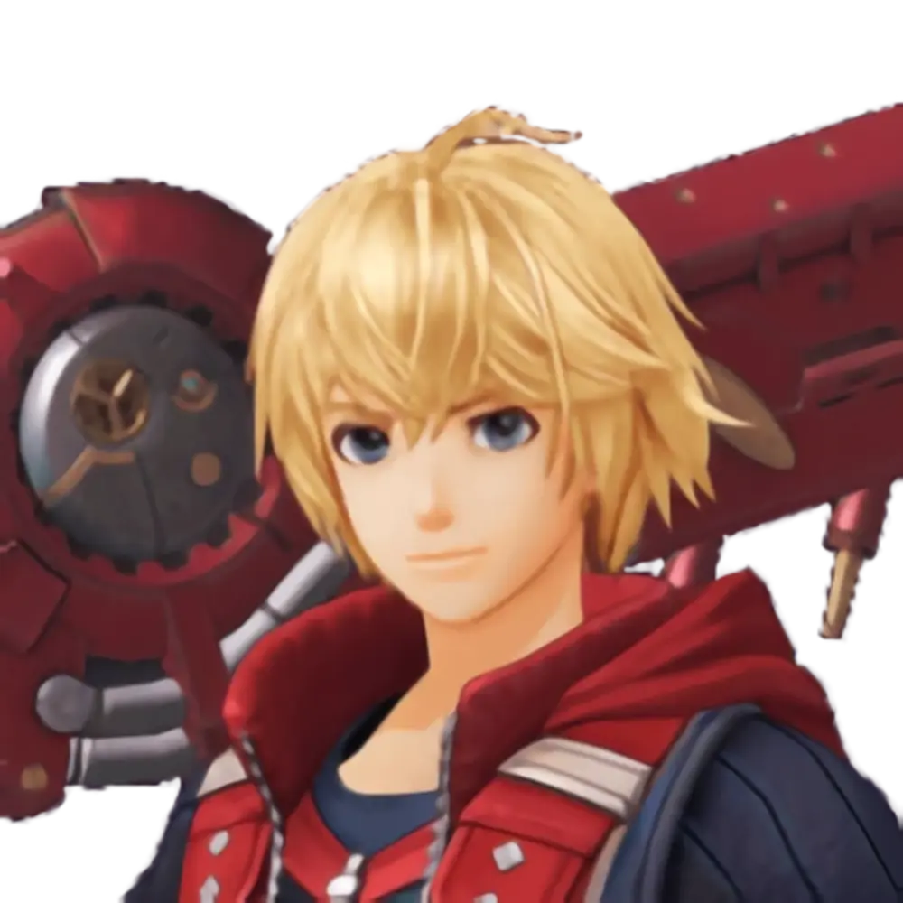

Shulk

The protagonist and primary playable character in Xenoblade Chronicles is Shulk. One of the primary forces opposing the Mechon is his ability to wield the Monado, utilizing both the special powers of the blade and future visions. He is frequently referred to as the "Heir to the Monado" by certain people.
Quotes
"I've made a decision. … My purpose in life - I will pursue that faced Mechon. … They attacked our colony, killed Fiora... I will find that Mechon - find it and destroy it. Destroy them all!"
---
"So it's true. You really don't remember us at all. Fiora, listen! If nothing else, you must remember your family! That's Dunban over there!"
---
"Today, we use our power to fell a god, and then, SEIZE OUR DESTINY!"